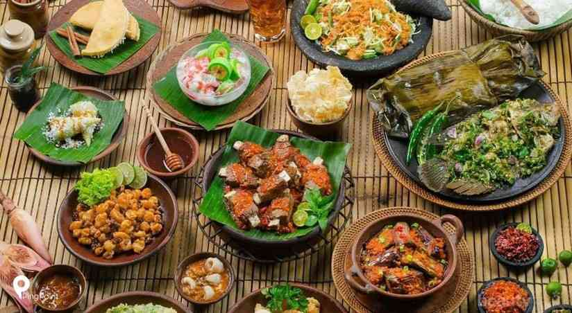
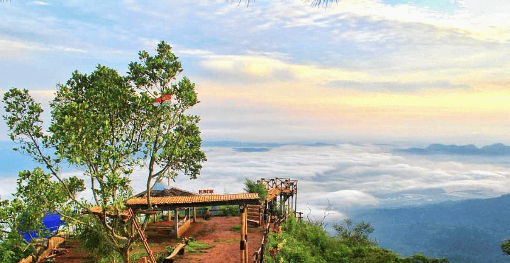
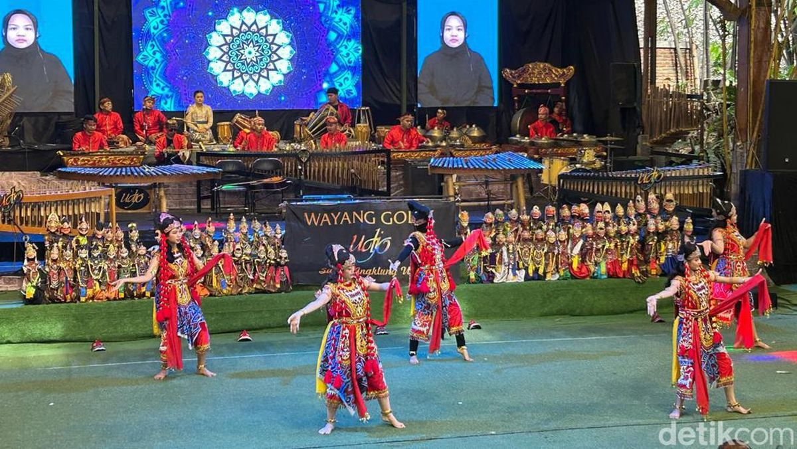

Destinasi
BANDUNG
Apa yang kamu cari di bandung?.

🍽️ Kuliner Bandung
Nikmati beragam makanan khas dan café-café estetik, mulai dari batagor, seblak, sampai coffee shop di Dago dan Punclut.
˙⋆✮Lihat

🏞️ Wisata Alam & Pegunungan
Rasakan udara sejuk dengan pemandangan indah di kawasan Lembang, Ciwidey, dan Dago Pakar — cocok untuk healing dan foto-foto.
˙⋆✮Lihat

🏛️ Budaya & Sejarah Bandung
Jelajahi sisi klasik Bandung lewat Jalan Braga, Gedung Sate, dan Saung Angklung Udjo yang menampilkan seni tradisional Sunda.
˙⋆✮Lihat